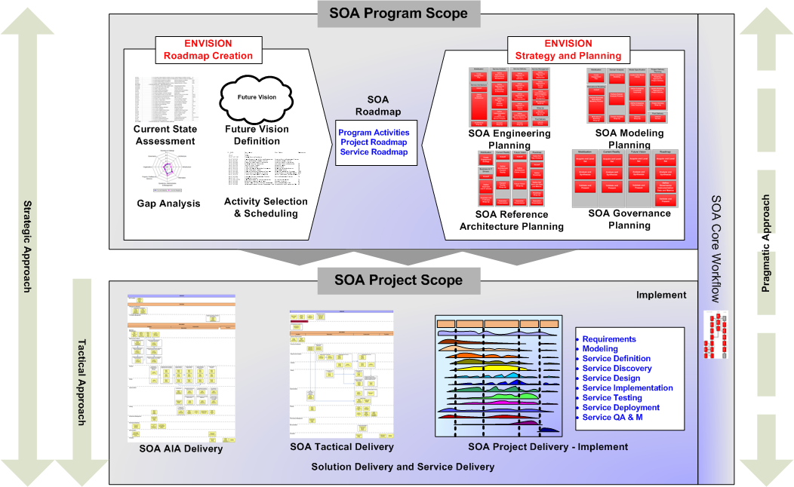

OUM |
Service-Oriented Architecture (SOA) Project Delivery Supplemental Guide |
||
Method Navigation |
Current Page Navigation |
||
|
|
||||||||
The Service-Oriented Architecture (SOA) Project Delivery Supplemental Guide should be used to help organizations to execute projects within a Service-Oriented Architecture (SOA) environment, either as an initial project, or as subsequent projects. It should help the customer to support SOA execution.
The focus of this guide is on delivery, but it also provides reference to the strategic tasks in the event that the project needs to first plan portions of the customer’s SOA strategy at the enterprise level, in order to accomplish delivery of the solution.
SOA projects based on the SOA Project Delivery view may be planned in combination with the delivery of a larger software implementation project, or the view may be used to support a standalone SOA implementation. The SOA Project Delivery View refers to three approaches (Strategic, Pragmatic and Tactical).
OUM also provides a SOA Tactical Project Delivery view. The SOA Tactical Project delivery view is a more agile approach to SOA used during projects where SOA is being employed to solve practical problems. Often things like a services repository, or establishing services reuse at the enterprise level are not the main objective of these projects.
This guide provides SOA specific supplemental guidance for OUM tasks. In practice you will use these tasks in the context of a SOA implementation project delivery.
The SOA Project Delivery Supplemental Guide also provides a link to the SOA Application Integration Architecture (AIA) Supplemental Guide.
Service-Oriented Architecture (SOA) is an Information Technology (IT) strategy that, in many cases, spans the entire enterprise. IT projects are implemented to fit within an SOA and are therefore just a piece of the larger SOA initiative. If projects are developed independently, without consistent tie-in and guidance from the overall SOA leadership team, the effectiveness and value of each delivery is substantially reduced. Fundamental to successful SOA adoption is the establishment of an Enterprise Service Engineering Framework which is used to tie project delivery and operations into the overall SOA Governance structure and Reference Architecture, as well as apply the best usage of investment in Service Infrastructure.
Organizations can approach their use of SOA in several ways:
Strategic SOA Approach – This encompasses both enterprise and project SOA engagements in a unified, top-down effort to bring the benefits of SOA to the entire organization and involves goals for significant SOA maturity growth. From an OUM perspective this means doing the appropriate Envision tasks for the enterprise and then proceeding to SOA projects using Implement tasks. Specifically, tasks for SOA Roadmap Creation and SOA Strategy and Planning precede project implementation tasks. Therefore, a strategic approach to SOA would consider ALL the tasks in the SOA Project Delivery view.
SOA Pragmatic Approach – This occurs when the organization begins their SOA efforts at the project level, but uses this as a springboard to begin to make progress at accomplishing some of the work normally done at the enterprise level in order to begin to gain the larger benefits of SOA. This allows for incremental improvement in SOA maturity. From an OUM perspective, the entry point is at OUM Implement, but with some selected tasks from SOA Strategy and Planning. Therefore, a pragmatic approach to SOA would include Implement focus area tasks and Envision tasks only as deemed necessary by the project.
SOA Tactical Approach – This occurs when SOA is used to solve business problems at the project level without regards to the enterprise-level tasks needed to build full SOA capability. Here the priority is eliminating specific pain points using SOA rather than growth of SOA maturity. From an OUM perspective, a SOA Tactical Approach only involves tasks at the OUM Implement level. This approach does not include SOA Roadmap Creation or SOA Strategy and Planning (Envision) tasks. Therefore, a tactical approach to SOA would ONLY include Implement focus area tasks.
There are three views available for your SOA tactical project, you can use the SOA Project Delivery view and include only those tasks relevant for your project, you can use the SOA Tactical Project Delivery view or the SOA Application Integration Architecture view.
The SOA Tactical Project Delivery view has been pre-tailored for tactical SOA Projects. You may choose to use this as a starting point, and then tailor-up using tasks from the SOA Project Delivery view based on the characteristics of your project.
The Application Integration Architecture (AIA) view is used to execute SOA implementations that utilize Oracle AIA that provides a “pre-built SOA” where significant aspects of a Strategic SOA Approach have been done in advance so that a specific SOA integration project can be completed swiftly and consistently.

Within this context, for example, one could see how a SOA Application-to-Application integration project could be:

Copyright © 2006, 2016, Oracle and/or its affiliates. All rights reserved.